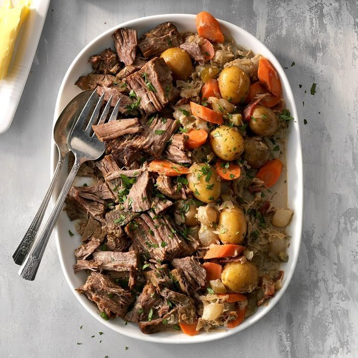

Sunday Pot Roast

Delicious slow roasted beef and veggies
Fall apart, tender Pot Roast slow cooked and smothered in a delicious gravy with potatoes and carrots.
A warm and hearty dinner recipe… this beef roast is a perfect complete meal you can prepare with minimum effort.
Ingredients
- One 3-5 pound chuck roast
- 3 tbsp olive oil
- 8 whole carrots peeled and chopped
- 1/2 cup red wine
- 3 cups beef broth
- 2 sprigs rosemary and thyme
Steps
- Heat skillet until high heat
- Sear the roast on the skillet
- Once all sides are seared place roast into a crockpot slowcooker
- Add all other ingredients to the slowcooker
- Set the slowcooker to 10 hours and simmer all day